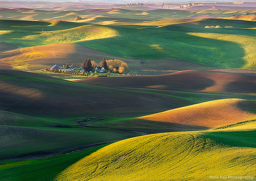
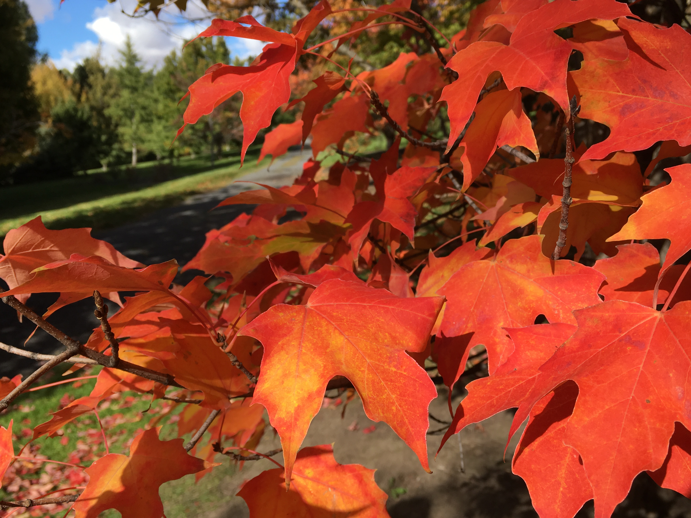
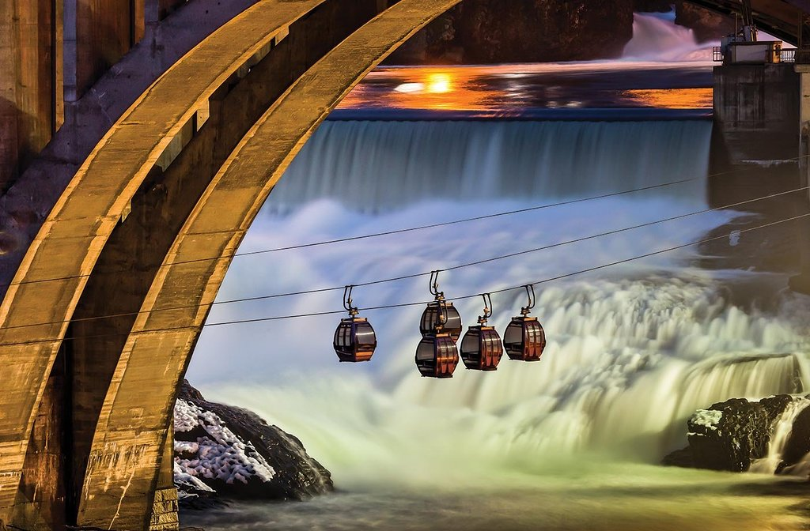
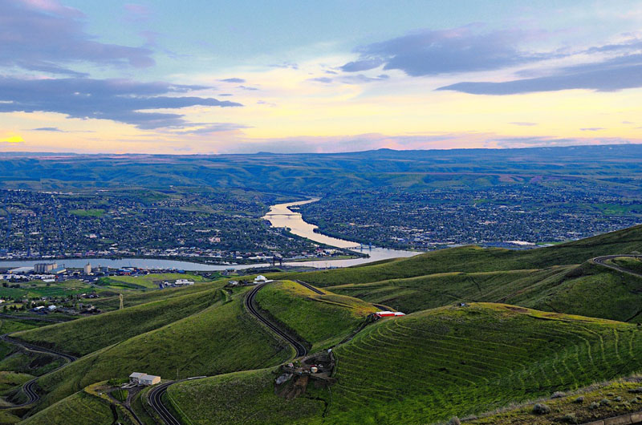
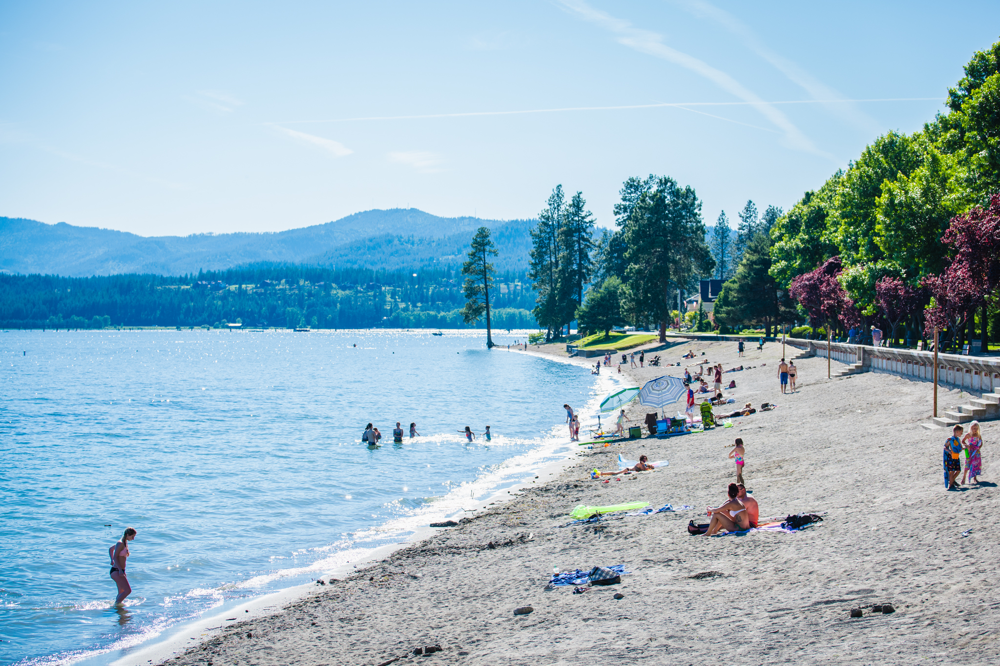

Since moving to Moscow last summer, we have both been amazed and content with the offerings of this small town (or big city, according to Hugh).
If you are thinking about travelling to Moscow, what other places can you also visit on the way? Here are some spots that we have really enjoyed, and hope you will appreciate them too!
Moscow Summer Highlights:
The summer weather in Moscow is usually very dry (expect no rain, and barely any clouds in the entire summer). You may want to bring your sunscreen and sunglasses. The weather can get quite hot during the day (bring those summer dresses), but chilly at night (bring a jacket).
There is this unusual landscape in the Palouse River Valley called Rolling Hills! Definitely worth seeing.
.

Moscow Farmer's Market (every Saturday 8am -1pm):
You wouldn't expect a tiny town like Moscow to have such a big fancy Farmer's Market. There are always lots of live musicians, bakeries, caterers, art works, handcrafts, local farmers, and much more. We highly recommend the white nectarines, donut peaches and rainier cherries from local farmers! They are the sweetest fruits we have ever tasted.
Arboretum and Botanical Garden:
University of Idaho's Arboretum and Botanic Graden sits in a scenic location right next to the palouse rolling hills. A great variety of plants are on display in a delicately designed landscape. It takes about 1.5 hours for a full-round lovely walk.
.

Hamilton-Lowe Aquatics Center:
Love swimming and water slides? This is the right place! For only $6, you get a ton of water activities. You may even bring your own barbecue, or order from the concession stand.
Moscow Art Walk:
Artworks from local artists are displayed throughout many businesses in Moscow, ID. You will see them as you roam on Main Street.
University of Idaho:
In Moscow is located University of Idaho's flagship campus. It even has its own cows and crops (for the agricultural programs), as well as its own golf course (where you can play a golf game or two).
Nearby Cities:
Spokane:
Highly recommended! Spokane is about a 2-hour drive north of Moscow. It is a big city with real fancy shopping malls (and Chinese food buffets). Moreover, Spokane River turns into a huge waterfall
(Spokane Falls) in the dowontown area, and you can ride on a gondola to overlook the entire falls and river. The Monroe Street Bridge and Waterfront Park next to Spokane Falls are also beautiful. Can't miss all this!
.

Lewistion/Clarkston:
This twin of cities spans acorss Washington and Idaho. Because Lewiston sits in the valley next to Snake River, you get to overlook the whole city and the river during the 40-minute drive from Moscow to Lewiston. The view is truly extraordinary and breathtaking! There is also a
roller-skating rink in the summer.
.

Coeur d'Alene:
Lake Coeur d'Alene and
Coeur d'Alene National Forest are the perfect resorts to take your summer vacation (yes, it will get hot enough for swimming).
.

Pullman:
Pullman is about a 20-min drive west of Moscow, hosting one of the campuses of Washington State University. Just like Moscow, it is a lovely small college town. It has a open and free
Bear Center, where you can watch grizzly bears roam free. There are also lots of great authentic Asian restaurants (me personally recommending
Plum).
Seattle:
This is Seattle! What else needs to be said?
Seattle is about a 6-hour drive west of Moscow. Come here to have fresh seafood, see the buzzy city life, and try indoor skydiving. Don't forget to visit Amazon's new indoor rainforest called
The Spheres.